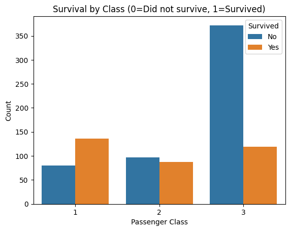
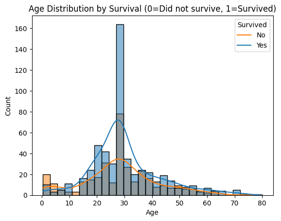
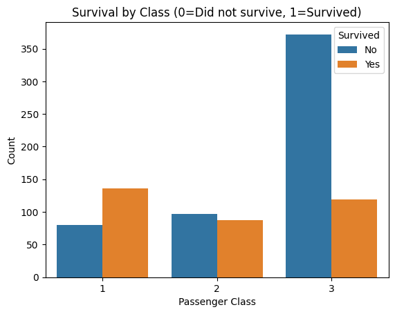
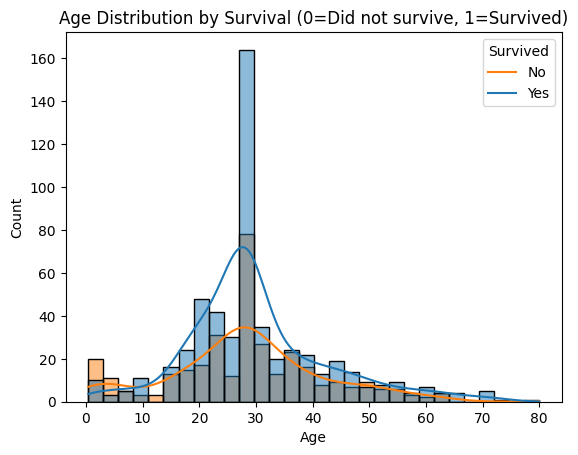

Project 2: Titanic Survival Classification
1. Introduction to the Problem
This project aims to solve the problem of predicting whether a passenger survived the Titanic disaster based on their demographic and travel information.
This is a classification problem because the target variable (Survived) is categorical (0 = No, 1 = Yes).
Questions:
- Can we accurately predict if a passenger survived based on their characteristics?
- Which features are most important for survival?
2. Introduction to the Data
The data for this problem is the Titanic dataset, which contains passenger information (name, age, gender, class, etc.) and survival status.
- Source: Kaggle Titanic Dataset
- The dataset contains 891 rows and 12 columns.
Features include:
- pclass: Ticket class (1 = 1st, 2 = 2nd, 3 = 3rd)
- sex: Gender
- age: Age in years
- sibsp: # of siblings/spouses aboard
- parch: # of parents/children aboard
- fare: Passenger fare
- embarked: Port of Embarkation (C = Cherbourg, Q = Queenstown, S = Southampton)
- survived: Target (0 = No, 1 = Yes)
3. Pre-processing the Data
Steps:
- Drop irrelevant columns (like name, deck, embark_town).
- Handle missing values in
ageandembarked. - Encode categorical variables (sex, class, embarked).
- Ensure target variable is numeric.
4. Data Understanding / Visualization
We will visualize the dataset to explore:
- Survival rate by gender, class, and age.
- Correlation heatmap.
 



The visualizations reveal several key insights:
- Gender: Females had a significantly higher survival rate compared to males
- Class: First-class passengers had the highest survival rate followed by second-class and third-class
- Age: Children and younger passengers generally had better survival rates
- Correlations: Strong negative correlation between being male and survival, positive correlation between higher class and survival
5. Modeling
These are the three classification models tested:
- Logistic Regression (linear baseline)
- Decision Tree (non-linear, interpretable)
- Random Forest (ensemble, usually more accurate)
6. Evaluation
The model will be evaluated by using:
- Accuracy
- Precision, Recall, F1-score
- Confusion Matrix
All the models performed similarly. They all got around 80% accuracy from a test size of 30% and a random state of 40.
7. Storytelling
The models reveal that:
- Women had a much higher survival rate than men
- First-class passengers survived at higher rates than third-class passengers.
- Younger passengers had a better chance of survival
8. Impact Section
Even though this is a historical dataset, the implications extend to real-world applications:
- Social impact: Highlights class and gender inequality during disasters.
- Ethical impact: Predictive models should not be used to justify discriminatory practices.
- Practical impact: Understanding survival factors can inform future safety policies.
9. References
- Kaggle Titanic Dataset: https://www.kaggle.com/c/titanic/data
- Scikit-learn Documentation: https://scikit-learn.org/
- Jupiter Notebook outline created by Chatgpt GPT-5